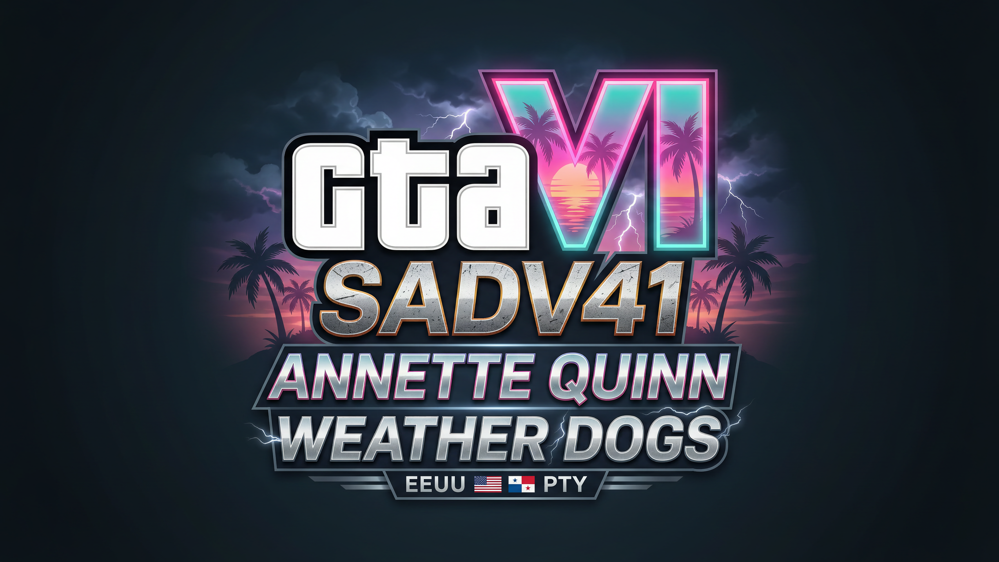
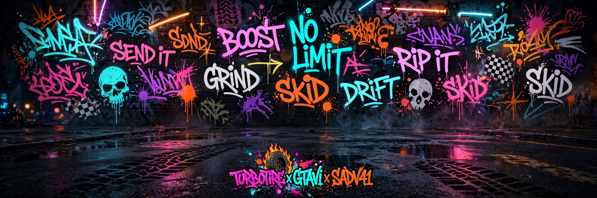

Flyer TurboTire
Modelo, pila y Prado blanca. Ver flyers completos en xTURBOTIRE.


Dentro del mismo GORRA se intercala hacia GTAVI y cambia según la preferencia del cliente.
Si eliges TURBOTIRE: se enfoca en rines y llantas, todo TRD 4X4.
Si eliges SADV41: se informa, comunidad, sismo, Llantería Jackson.
Todo TRD 4X4. Rin 13 a Rin 22. Perfiles AT / MT / HT. Windforce · Tourador. Montaje, desmonte rápido y balanceo.
Modelo, pila y Prado blanca. Ver flyers completos en xTURBOTIRE.

Gorra negra sobre pila de llantas. Misma ciudad costera, mismo atardecer.
SADV41 informa. Aquí va lo que corresponde a SADV41: sismo anterior, Llantería Jackson, comunidad, videos NQE44 y los artes de SADV41.

Gorra negra con logo S en hexágono cyan, ojos cyan, lluvia, noche. Pega el nombre completo desde GitHub si sale cortado.

Mismo personaje en ciudad de noche, llantería de fondo, lluvia. Pega el nombre completo desde GitHub si sale cortado.
Video SADV41 en esta misma carpeta: GORRA/GTAVI/xTURBOTIRE/xSADV41/NQE44.mp4
Video SADV41 en esta misma carpeta: GORRA/GTAVI/xTURBOTIRE/xSADV41/NQE44-1.mp4
⚠️ Terremoto M4.9 en Azuero · Réplicas M3.2–M3.7 · Protocolo SINAPROC vigente.
Kit de Respuesta Comunitaria. Prepara tu 4x4, SUV o flota con rines, llantas, lubricación 【entity-Repsol¦canonical_name=Repsol】, vulcanización y balanceo. Sede Central: Carretera Panamericana, frente a Autorepuestos Penonomé, Coclé. Red de apoyo: Burunga · Arraiján.
Abrir Página Completa: Llantería Jackson 4x4 →
Archivo en: GORRA/GTAVI/xTURBOTIRE/xSADV41/Llantería Jackson 4x4.html
